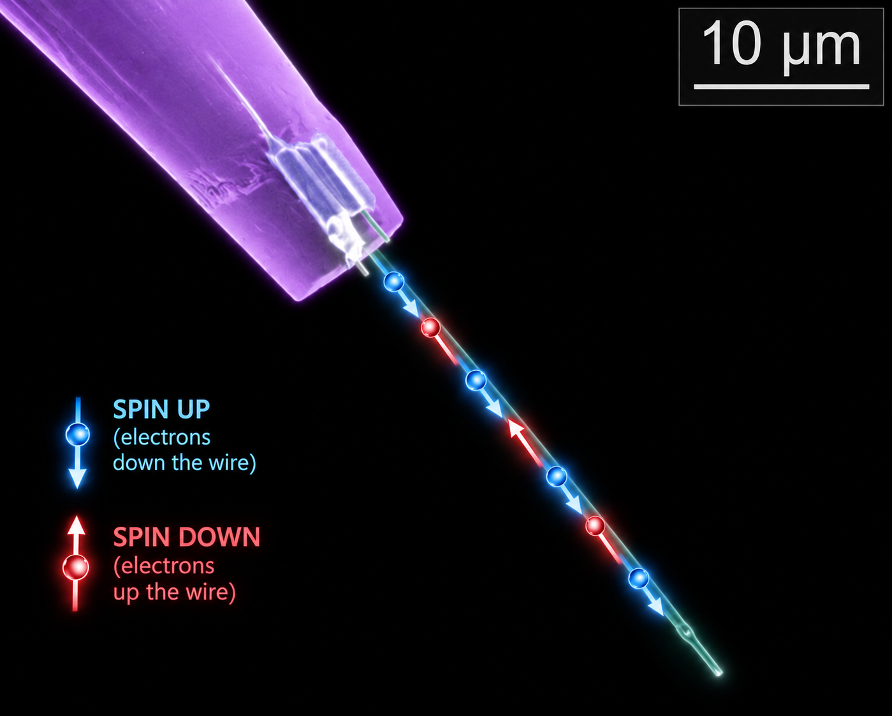
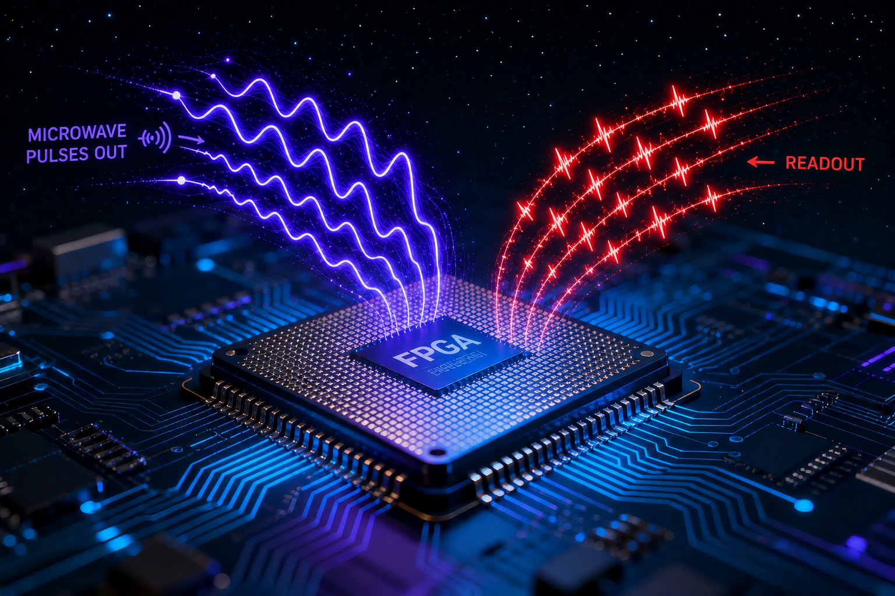

Our Tools
Instruments
Two complementary setups anchor the lab: an ultra low-temperature scanning tunneling microscope for atomic-resolution spectroscopic imaging, and a nitrogen-vacancy (NV) diamond quantum sensing platform. Every experimental platform offers a different window into quantum materials. Together, they allow us to explore correlated realm of electrons with emergent charge orders, magnetic dynamics across multiple length and time scales.
Setup 01 — Ultra-Low Temperature Scanning Tunneling Microscopy and Spectroscopy (STM/S)
Atomic-resolution mapping of electron wavefunctions
Scanning tunneling microscopy enables direct visualization of the electronic structure of quantum materials with atomic resolution. We are commissioning a Unisoku ULT-STM operating at millikelvin temperatures and in high magnetic fields. Our STM will enable access to the local electronic wavefunctions of quantum materials with exceptional energy and spatial resolution.
STM/STS Cryogenic UHV
Setup 02 — Quantum sensing with NV Centers
Spin-Qubits as nanoscle magnetometers
Nitrogen-vacancy (NV) centers in diamond are atomic-scale spin defects that are robust spin-qubits. We employ them as magnetometers, sensitive enough to image nanoscale magnetic textures, current flow, and spin dynamics without the constraints of tunneling-based probes. This is capability is intended to complement our STM system by extending measurements to insulating samples and to a non-contact, non-invasive magnetic-field-sensing modality.
NV magnetometry Quantum sensing
Our Tricks
Techniques
Beyond the instruments themselves, the lab develops the probes and measurement methods that make these experiments possible.

Fig. 3 — Topological nanowire tipTechnique 01 — Novel Probes
Customized Scanning Probes
We design and fabricate custom scanning probes for STM using nanofab techniques such as focussed ion beam milling. These tips can be tailored to couple to specific electronic, superconducting or magnetic ground states we are investigating, and can sometimes give rise to unexpected, novel physical phenomena such as axionic tunneling for topological materials.
Custom probes Nanowire tips
Technique 02 — Quantum Measurement Control
FPGA-driven control for quantum sensing protocols
Extracting clean, quantitative signal in NV-based magnetometry depends on precise control of measurement conditions. We develop FPGA-based control systems for high-fidelity microwave pulse generation, timing, and synchronization required for advanced quantum sensing protocols. We are working towards arbitrary pulse sequences, real-time experimental control, and rapid implementation of novel sensing techniques for nitrogen-vacancy center magnetometry.
FPGA control Pulse sequencing

Fig. 4 — FPGA pulse generation and readoutCurious about our instrumentation?
Get in touch — we're happy to talk through the setups with prospective students and collaborators.
Contact the lab